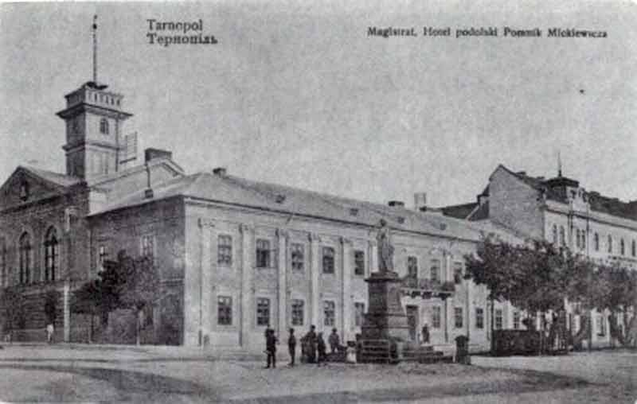

Заснування міста
Вперше Тернопіль згадується 15 квітня 1540 року, коли польський король Сигізмунд I видав краківському каштелянові, великому коронному гетьману Янові Амору Тарновському, грамоту на заснування міста та володіння землею навколо нього. Протягом двох років той відчутно укріпив його, зробивши сторожею Поділля і Червоної Русі. Тоді розпочалося будівництво замку, який у перебудованому вигляді зберігся до наших днів. Поселення на території Тернополя були і до заснування міста. На його околицях, зокрема, виявлено сліди стоянок первісних людей, тому припускають, що територія міста була заселена вже в Х тис. до н. е.
Походження назви
Існують різноманітні версії походження назви міста. Заснування міст у Королівстві Польському та Речі Посполитій відбувалося на основі королівських привілеїв. Досить часто засновник давав місту своє ім'я. Тернопіль був заснований магнатом та відомим діячем Речі Посполитої Яном Амором Тарновським, відповідно назва міста походить від прізвища магнатів Тарновських і грецького скороченого закінчення -поль від поліс «місто». Своєю чергою, прізвище роду виводять із назви міста їхнього роду — Тарнова. Також на честь Тарновських названі засновані ними міста Тарнобжег і Тарногород. Варто звернути увагу, що навіть герб Тернополя є варіантом шляхетського герба Леліва, який використовувався Я. А. Тарновським. Від самого заснування міста місцеве руське (українське) населення називало його — Тернопіль.9 серпня 1944 року спеціальним указом Президія Верховної Ради СРСР змінила назву міста з Тарнопіль на Тернопіль. Також вони перейменували область із Тарнопільської на Тернопільську.
Інше тлумачення назви має народні корені. За ним, місцевість, де було засноване місто, називалось Терновим полем, або Тернопіллям, що в полонізованому варіанті звучало також Тарнополля. З українського варіанту Тернополля — «Тернове поле» і виводять сучасну назву міста. Тернополлям місцевість називали за те, що вона довгий час була поросла терном. У зв'язку з цим 1982 року було створено новий герб Тернополя. Замість герба Тарновських — герб із наголошенням на «терновому походженні» — срібна п'ятипелюсткова квітка терену з насінником у вигляді червоної зірки. Але тут потрібно згадати ситуацію в Польщі, де назву міста Тарнобжег намагалися пояснити тим, що нібито там на берегах Вісли ріс терен. Можливо, що поширення цієї версії відбувалося для дефеодалізації походження назви міста, заснованого учасником війни проти Москви Тарновським.
